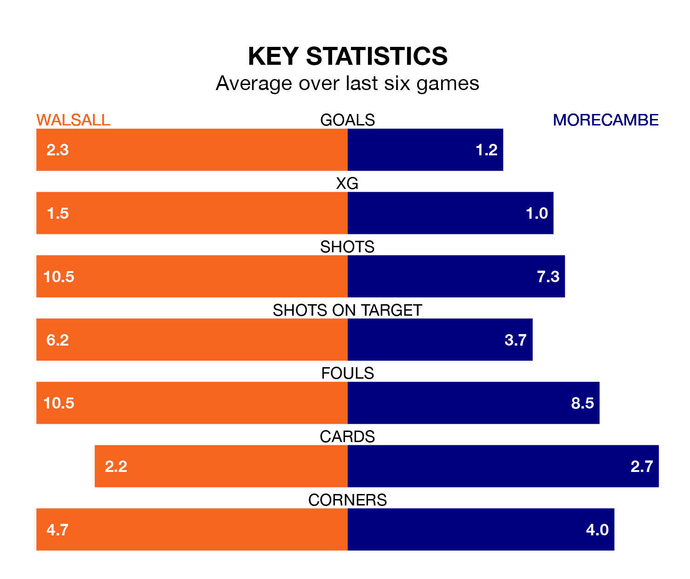

Walsall host Morecambe on Tuesday at the Poundland Bescot Stadium in EFL League Two.
In their last league match, on Saturday, Walsall drew with Gillingham 1-1 away, with their goal scored by Isaac Hutchinson.
Morecambe won, 2-1 away at Crawley Town, with Gerard Garner (two) scoring their goals.
With 42 goals in 28 games so far this season, Walsall are scoring at the league's average rate with 1.5 goals per game. But they are conceding at an average rate too, letting in 41 goals at a rate of 1.5 per game.
Morecambe are also average scorers, with 1.5 goals per game. They have conceded 1.6 goals per game.
In the last five years, Walsall and Morecambe have played each other on five occasions. Walsall won one of them, Morecambe three, and they drew once.
On average, the Saddlers scored 0.6 goals and the Shrimps 1.4 in those matches.
Their last meeting was on August 5, when Morecambe won 2-1 at home.
The Saddlers are 15th in the table after 28 games, of which they have won 10 and drawn eight, earning 38 points.
The Shrimps are three places ahead of the home side in 12th, with 11 wins and seven draws putting them on 40 points.
In Michael Mellon, the visitors have one of the league's most on-form strikers so far this season. He has notched 13 goals in 22 appearances, to sit eighth in the scoring charts.
His goal rate of one every 134 minutes is quicker than that of Freddie Draper, Walsall's top scorer with a goal every 164 minutes, and a total of 10 goals in 21 games.
Walsall are in reasonable form in EFL League Two, with three wins and two draws from their last six games.
With two wins and two draws over that period, Morecambe's form is worse – they have taken eight points from 18, compared to the Saddlers's 11.
Tuesday's match will be refereed by Craig Hicks, who has taken charge of four EFL League Two games so far this season, issuing no red cards and booking 16 players. He has awarded one penalty.
He is yet to oversee a match featuring either Walsall or Morecambe this season.
Updated: 13:52 (UTC), 05/02/24